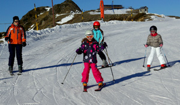
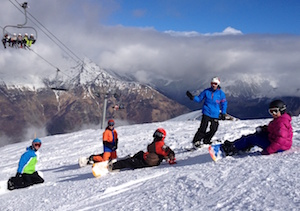

Les sorties
Les sorties de ski et snow ont lieu à Luz Ardiden, le mercredi, départ à 12h30 de Tarbes, Allées Pierre de Coubertin (le long du stade Maurice-Trélut). Retour vers 19h. Les bus stationnent maintenant 200m plus loin en direction du rond-point.
Les groupes
Les enfants sont répartis par groupe de niveau de 10 maximum, avec 2 moniteurs par groupe.

Le passage des tests
Il a lieu fin mars, dans la station de Luz Ardiden.
- Ski : des niveaux Ourson à Expert
- Snowboard : trois niveaux